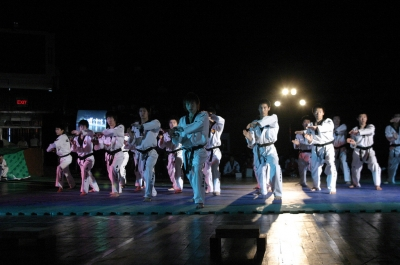
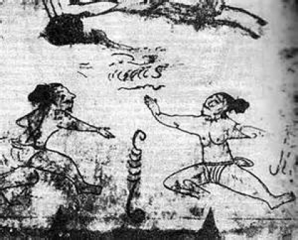
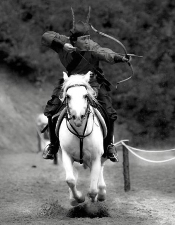
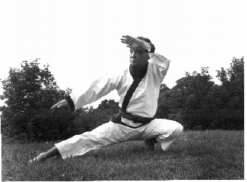
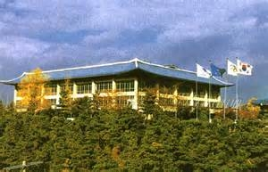

En la actualidad el Tae Kwon Do, es un deporte con aproximadamente 6 millones de practicantes en todo el mundo, es una de las dos artes marciales reconocidas por el Comité Olímpico Internacional y con participación en los juegos Olímpicos desde 1988 como deporte de exhibición y desde el año 2000 como deporte oficial, pero lo cierto es que, el éxito del Tae Kwon Do se debe a su aportación en mejorar la condición del ser humano a través del aprendizaje de distintas habilidades de autodefensa, disciplina mental y un comportamiento filosófico. Quien lo ha vivido en lo más profundo de su esencia sabe que el Tae Kwon Do es para toda la vida.
El Tae Kwon Do tiene una larga y fascinante historia. En la antigüedad lo usaron las fuerzas militares y tuvo otros nombres como: Tae Kyon, Soobak y Tang Soo Do (Park, 1993). Pero empecemos desde más atrás, ya que hablar del origen del Tae Kwon Do, es hablar del origen de Corea. Donde se cuentan relatos de leyendas así como guerras con alianzas y rupturas entre los pueblos en la lucha por el territorio y el poder. Estas constantes guerras ocasionaron que los pueblos desarrollaran ejércitos y con ellos diferentes formas de lucha. He aquí un resumen de la historia de Corea que va fuertemente ligado al origen y desarrollo del arte marcial coreano llamado en la actualidad Tae Kwon Do.
Las leyendas cuentan que el pueblo coreano desciende del hijo de un gran sabio, un dios que bajó a la tierra para enseñarle a los humanos una forma de vida responsable y productiva. El nombre de este ser era Hwanung y representaba los valores de honor, valentía y confianza; este suceso lo ubican las leyendas en el año 2333 a.C. Hwanung tuvo un hijo de nombre Tangsoon con una habitante de la tierra. Tangsoon fue criado por los Ancianos y continuó con la civilización de las diferentes tribus de la península coreana ensenándoles la agricultura, la arquitectura y otras convenciones sociales importantes. Se dice que después de unir a seis tribus del norte, creó la nación Ko-Chosun (o Gojoseon), que significa “la tierra de la calma de la mañana”, de la cual se piensa que se originó la Corea actual (Cruz-Zerón, 2012).
El reino de Tangsoon duró hasta el año de 1122 a.C., creando un pensamiento único a través del hongik ingan, que habla sobre los beneficios del humanismo universal y del “jaese-ihwa”, que establece normas para la vida humana a través de la razón. Lo anterior da origen a los fundamentos metafísicos del Tae Kwon Do, y a los principios y valores que se inculcan a sus practicantes (Cruz-Zerón, 2012).
Ko-Chosun tuvo conflictos con China y cayó en el año108 a.C. A partir de ese año, China estableció cuatro comandarías que fueron cayendo, dejando las ciudades-estados libres del dominio chino y que culminó con el surgimiento de tres grandes reinos: Koguryo, Paekje y Silla (Cook, 2009)
Es en este período donde se tienen las primeras referencias a una técnica de pelea que derivó en el actual Taekwondo. Pinturas en las tumbas reales de Myong-Chong y de Kakchu-Chong, pertenecientes a la dinastía Koguryo, han dejado evidencia de que los pobladores de aquellos tiempos practicaban el arte marcial como un medio para fortalecer el cuerpo y elevar el espíritu (Cruz-Zerón, 2012).
El reino más grande de los tres fue el de la dinastía Koguryo, fundado en el año 37 a.C. Debido a la amenaza constante de invasión por parte del imperio chino, Koguryo formó una fuerza militar especial conocida como sunbae que significa “Señor sabio”, hombres de virtud que nunca retrocede ante un combate, entrenados en Subak y taekkyon y cuyo pensamiento se basaba en una fuerte creencia en los dioses y en una gran fuerza de voluntad para defender el país, además de consolidar la centralización del poder en el reino. Este grupo militar sirvió de ejemplo al reino de Silla para formar su propia elite de guerreros (Cruz-Zerón, 2012).
Es en ese período donde comienza la influencia de otras técnicas de pelea, como la china, sobre el antecesor del Taekwondo conocida entonces como Taekkyon, practicado por el pueblo del reino de Koguryo. Esta influencia se observa en el estilo de golpear y en las habilidades de las patadas de giro (Cruz-Zerón, 2012).
El segundo reino en tamaño fue Paekje, fundado en el año 18 a.C. en el sur de la península, la actual Seul; se sabe que era una sociedad superior en cultura a Koguryo y Silla, y que además eran practicantes de la arquería y excelentes jinetes. El momento cumbre de este reino es el siglo IV d.C. que terminó con la guerra que inició contra el reino de Silla en el año 433. Paekje fortaleció sus alianzas con el imperio de Japón y decidió invadir a Silla, éste, por su parte, solicitó apoyo del reino de Koguryo, el cual lo respaldó con 50,000 hombres fuertemente entrenados en kwonbop, un sistema único y efectivo de lucha hombre a hombre. Para entonces se había desarrollado un arte marcial nativo llamado subyeokta, en el cual se utilizaban brazos, piernas y manos a manera de espada; esta mezcla también formó parte de la formación del Taekwondo (Cruz-Zerón, 2012).
La caída de Paekje se establece en el 660 d.C. aliada en ese tiempo con Koguryo, enfrenta una batalla contra Silla, y ésta lo invade con apoyo de China. Paekje intenta una última recuperación de su territorio en el año 663 d.C. apoyado por Japón, pero nuevamente es derrotado por Silla y sus aliados chinos (Cruz-Zerón, 2012).
Finalmente, el más viejo de los tres imperios, Silla, fundado en el año 57 a.C. también resulta ser el más pequeño en territorio, pero llega a ser el imperio dominante de la región. Por el estilo de vida que se llevaba, una forma conservadora manteniendo las costumbres de los antiguos clanes chinos que ahí habían existido, fue refugio de muchas personas de otros reinos, llegando a tener una población muy extensa y heterogénea (Cruz-Zerón, 2012).
El gobierno de Silla creció con gran influencia del budismo y confucionismo, lo que ayudó a que se establecieran instituciones funcionales y estructuras jerárquicas basadas en el linaje, creando una nobleza con derechos de acuerdo al rango. Este tipo de estructura jerárquica acompañada con una filosofía sólida, más las guerras constantes que impulsaban un fuerte sentido de patriotismo, dio origen a una elite militar conocida como Hwarang-do que significa “El camino de los jóvenes (o caballeros) florecientes”, donde Hwa se refiere a flor y al acto de florecer y Rang especifica el género masculino. En estos guerreros extraordinarios se ejemplifica la filosofía de que el Taekwondo encierra una vida plena. Éstos eran practicantes de Subak (defensa con las manos) y taekkyon (defensa con los pies), igual que sus contrapartes en el reino de Koguryo (Cruz-Zerón, 2012).
Llega así el año de 663 d.C. en el cual, como se mencionó, el reino de Silla vence al de Paekje bajo las órdenes del general Kim Yu Shin, quien logra la unificación de los tres reinos, ya que después de su triunfo en el 663, cinco años después (668 d.C.) vence a Koguryo, terminando con esto las amenazas constantes de ambos reinos (Cruz-Zerón, 2012).
Después de 27 Reyes que gobernaron en el período de Silla, emergió una nueva dinastía, la Koryo la cual gobernó sobre la península coreana del año 918 a 1392, fue fundada por el emperador Taejo y desarrolló el taekkyon de una forma más sistematizada, convirtiéndolo en un método para la selección y ascenso dentro de la milicia. Los reyes de este reino tuvieron especial interés en el arte marcial como medio de defensa para el país, y por eso desarrollaron varios eventos para impulsar el aprendizaje del taekkyon, como juegos y torneos llamados Subakhui, que era un torneo de taekkyon (Cruz-Zerón, 2012).
El período de Koryo sobresale por dos cosas importantes: el impulso del antiguo Taekwondo y por el descubrimiento de la pólvora. Su trascendencia fue de tal magnitud que hoy su memoria prevalece sobre la península dándole el nombre al país que ocupa esa región: Corea (Cruz-Zerón, 2012). Este reino cae en 1288 y se establece la dinastía de Chosun en 1392.
A pesar de que Corea cerró su contacto con otras naciones y estableció controles de tráfico dentro del reino, sufrió otras dos invasiones por parte de la dinastía Qing. La primera invasión fue en 1627 y la segundo en 1637, donde fue vencido el reino de Chosun y quedó como estado tributario de China. Pasaron 200 años de paz bajo el dominio chino hasta 1894, cuando las tensiones entre China y Japón desencadenaron una nueva guerra que terminó un año después con la derrota del imperio chino, debido a que Japón contaba con nueva tecnología militar de occidente. Esta victoria japonesa sin bien garantizó la independencia de Corea de China, no la garantizó de Japón (Cruz-Zerón, 2012).
En 1897 se estableció el Imperio Coreano con la finalidad de obtener la independencia de Japón y recuperar la integridad nacional; para lograr esto, Corea buscó el apoyo del imperio de Rusia. Con esta nueva forma de gobierno se da la desaparición del Reino de Chosun. El Zar de Rusia apoyó a Corea en la guerra contra Japón, pero los japoneses lograron rechazar al ejército enemigo, lo que dio fin a la guerra ruso-japonesa en 1905 con el Tratado de Portsmounth, quedando Corea como un protectorado del Imperio de Japón y a partir de 1910 anexado totalmente al imperio nipón (Cruz-Zerón, 2012).
Los japoneses tuvieron el control del país durante 36 años. En ese tiempo no se les permitió a los coreanos la práctica del Taekkyon, el cual tuvo que ser practicado en secreto en los templos budistas (Park, 1993). Grandes maestros fueron asignados a trabajos en China o Japón, o enviados a servir en la milicia japonesa, dentro de los cuales encontramos personalidades como el general Choi Hong Hi, Won Kuk Lee y Hwang Kee, los cuales enriquecieron el arte marcial coreano con sus aprendizajes en otras artes marciales fuera de su país. Fue hasta 1945 cuando Japón es derrotado en la segunda guerra mundial tras el lanzamiento de las bombas atómicas en Hiroshima y Nagasaki por parte del ejército estadounidense. Esta victoria de los aliados no resultó tan positiva para la milenaria península de Corea, pues dejó al país divido en dos; propuesta realizada por el coronel Dean Rusk para determinar las áreas de influencia entre el gobierno socialista de Rusia y la estructura capitalista de Estados Unidos y aliados. (Cruz-Zerón, 2012).
Así como el país sufrió grandes cambios, lo mismo sucedió con su arte marcial; durante este período surge una nueva técnica conocida como Tang Soo Do difundido por Lee Won Kuk y por el maestro Hwang Kee, quienes aportaron a las técnicas nativas de Corea (taekkyon y subak) nuevos movimientos de defensa y ataque del Kung Fu provenientes de China y del Karate originario de Japón (Cruz-Zerón, 2012).
En 1955 se abrieron muchas escuelas de Tang Soo Do, teniendo como las más importantes la Moo Duk Kwan (Instituto de Virtud Marcial), Chung Do Kwan (Instituto de las Olas Azules) y la Chang Moo Kwan (Instituto de Entrenamiento del Espíritu Marcial); con la aprobación del presidente de Corea se convocó a los fundadores de las escuelas más importantes del país para unificar éstas y dar un nuevo nombre al arte marcial, tal vez con la finalidad de recuperar la tan herida identidad nacional. Dentro de las condiciones para formar un nuevo nombre, se acordó que no deberían hacer referencia al arte marcial chino, Tang Soo que significa “Manos Chinas”, ni con la de su homólogo japonés Karate que significa “Manos Vacías” (Cruz-Zerón, 2012).
El año que señala el comienzo del Tae Kwon Do como arte formalmente reconocido en Corea fue 1955, ya que el 11 de abril de ese año, un comité decidió que debía llevar el nombre de TAE KWON DO, por propuesta del general Choi Hong Hi, debido a que la palabra Tae Kwon Do describe perfectamente el arte: “la forma, estilo o manera de defensa con pies y manos” (Vatrano, 2006).
En 1959, se nombra a Choi Hong Hi como presidente de la Asociación Coreana de Tae Kwon Do y el arte comienza a expandirse fuera de Corea (Vatrano, 2006). Posteriormente, el 22 de marzo de 1966 con la difusión de este nuevo arte marcial en más de cien países, con aproximadamente 2,000 maestros de la disciplina, nace la Federación Internacional de Taekwondo (IFT) (Cruz-Zerón, 2012) y con asociaciones de Vietnam, Malasia, Singapur, Alemania Occidental, Estados Unidos, Turquía, Italia, Egipto y Corea (Vatrano, 2006).
En 1971 el presidente de Corea del Sur, Park Ching Hi, decreta el Taekwondo como deporte nacional y el 19 de noviembre de ese mismo año se forma el Kukkiwon (Gimnasio Nacional), fungiendo como el organismo central de operaciones del Taekwondo a escala mundial (Cruz-Zerón, 2012). Según Kyong Myong Lee, en su texto Taekwondo Dinámico, este deporte se abrió al mundo a través del Campeonato Mundial de Taekwondo, celebrado en mayo de 1973 en Seúl con participación de 19 países, y además, este campeonato sirvió de marco para que se constituyera la Federación Mundial de Taekwondo (WTF por sus siglas en inglés). Al respecto del primer campeonato mundial de Tae Kwon Do, de acuerdo con Vatrano (2006), el primer Campeonato Mundial de Tae Kwon Do se celebró en Montreal, Canadá en el año de 1974.
Tras continuos cambios dentro de la IFT, los partidarios de defender y conservar la tradición y esencia de este arte, fundan el 28 de mayo de 1973 la Federación Mundial de Taekwondo (WTF), teniendo como presidente al Máster Un Yong Kim, quien enfocó sus esfuerzos a la difusión del arte marcial en su aspecto deportivo. De acuerdo con Park (1993), es gracias a Un Yong Kim, presidente de la WTF y vicepresidente del COI, que los maestros de los diferentes Kwans se unieron y así mismo se le atribuye a éste maestro que el Tae Kwon Do se haya vuelto deporte olímpico.